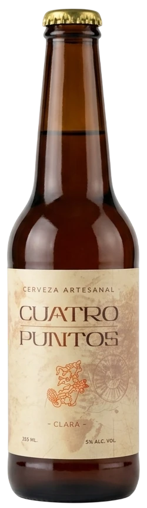
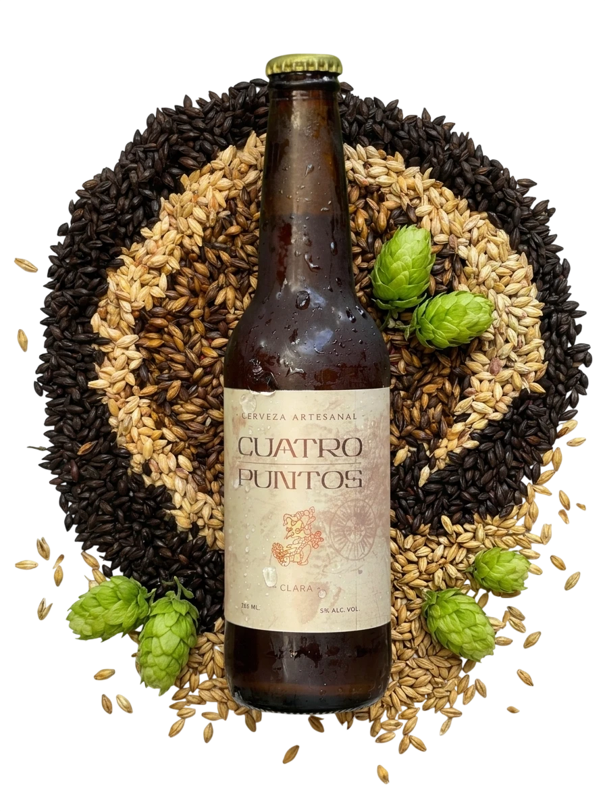
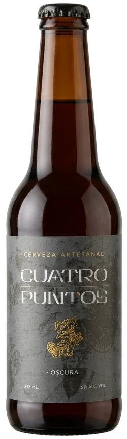

Clara
Cerveza artesanal
- Cuerpo medio y color cobrizo, con notas a caramelo tostado equilibradas con un lúpulo cítrico.
- Compleja sin dejar de ser refrescante y fácil de beber.
- Alc. vol.
- 4.5% – 5%
- Presentación
- Botella 355 ml
Cuatro Puntos
¿Eres mayor de 18 años?
Este sitio promueve bebidas alcohólicas y está dirigido exclusivamente a personas mayores de edad.
Lo sentimos. Para acceder a este sitio debes ser mayor de 18 años.
El abuso en el consumo de este producto es nocivo para la salud. Prohibida su venta a menores de edad.

Cervecería Artesanal · Conkal, Yucatán
Cerveza 100% artesanal elaborada con pasión, conciencia y el tiempo que merece, en el corazón de Yucatán.
Nuestra historiaNuestra tierra
En la villa de Conkal, un pueblo yucateco de profunda tradición henequenera a minutos de Mérida, habita Cuatro Puntos. Aquí, donde la tierra exige entrega y tiempo, elaboramos cerveza 100% artesanal con pasión, paciencia y el corazón en cada detalle.
No buscamos producir en masa: buscamos producir bien. Cada botella es resultado de semanas de dedicación, maceración y fermentación controlada, honrando el oficio cervecero.
Nuestro nombre, "Cuatro Puntos" rinde homenaje a los cuatro pilares de este néctar: agua, malta, lúpulo y levadura; y los cuatro rumbos que, en la cosmovisión maya, dan equilibrio a la tierra yucateca que nos vio nacer.
El detalle
Sin prisas, sin atajos. Solo cuatro ingredientes y la paciencia de dejar que la fermentación haga su trabajo.

Nuestras cervezas

Cerveza artesanal

Cerveza artesanal
Proceso artesanal
La malta molida se mezcla con agua caliente para liberar los azúcares fermentables. De aquí nace el mosto, la base dulce de toda cerveza.
El mosto se hierve y se incorpora el lúpulo, que aporta amargor, aroma y actúa como conservador natural.
La levadura transforma los azúcares en alcohol y CO₂ durante días de reposo a temperatura controlada. Aquí nace el carácter de cada receta.
La cerveza reposa el tiempo necesario para redondear sabores y afinar su cuerpo, sin prisas ni procesos acelerados.
Cada botella se llena, corona y etiqueta a mano, lote por lote, cuidando que llegue a tu mesa en su mejor momento.
Puntos de venta
Pide la tuya
Escríbenos por WhatsApp y te decimos qué tenemos disponible hoy.
Pedir por WhatsApp